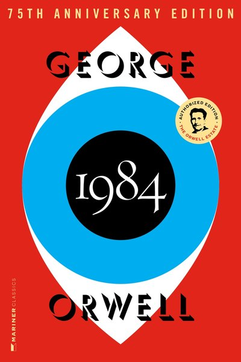
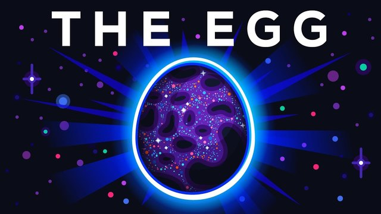
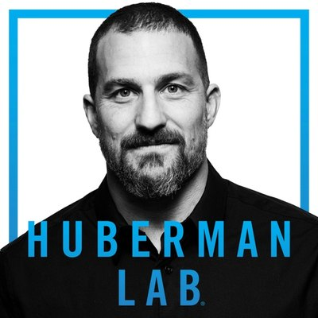
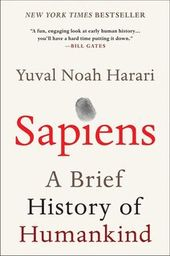
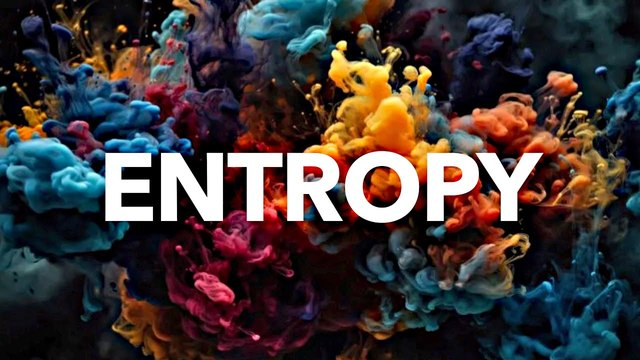
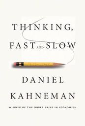
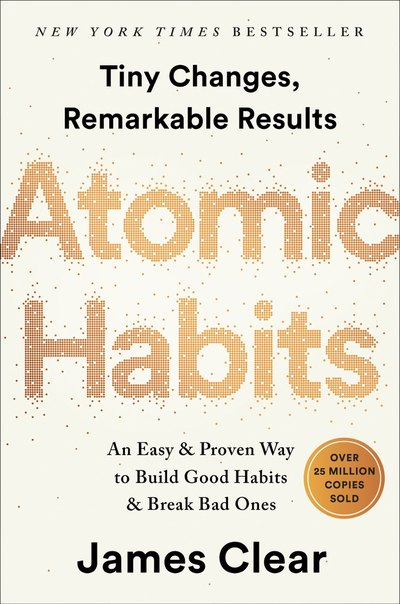

Be the onewho remembers.
Turn what you read   
into knowledge that lasts.
We take in more than any generation in history.
Books, podcasts, videos, feeds, from the moment we wake up. And we retain less of it than ever.
We don’t think the answer is to read less. Or to let a machine remember for us.
What you take in should become part of you. The book that changed how you see the world  
That’s why we made REPS.
Every book. Every episode.
Every idea worth retaining.
You do not rise to the level of your goals. You fall to the level of your systems.
“Who controls the past controls the future. Who controls the present controls the past.”
Harari calls farming “history’s biggest fraud.” Bring it up at dinner on Friday.

The Agricultural Revolution certainly enlarged the sum total of food at the disposal of humankind, but the extra food did not translate into a better diet or more leisure.
We did not domesticate wheat. It domesticated us.
The word ‘domesticate’ comes from the Latin domus, which means ‘house’.

Bookmark graveyards are useless.Saving was never the point.
Retaining is.
Everything you save to REPS comes back to you, until it’s yours.
Doomscrolling is making us dumb.Scroll less. Know more.
Trade a few minutes of the feed for a daily round built from what you chose to take in.
AI should make you smarter.Not think for you.
REPS reads what you save and asks you about it. You do the remembering. The thinking stays yours.
Your Knowledge Companion.
Free on the App Store.